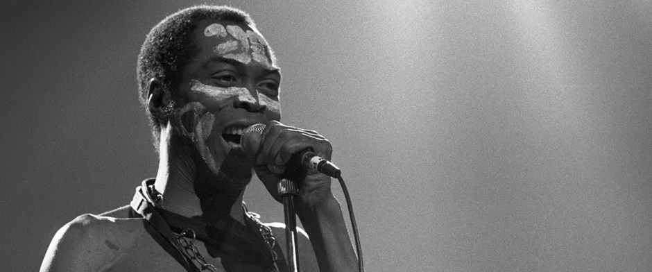
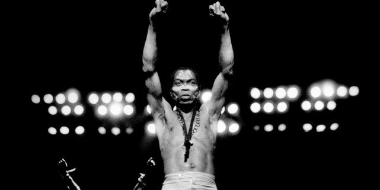

The Black President
About Fela
He started his musical studies in 1958 in London and later formed a band called Koola Lobitos. In 1963, Fela moved back to Nigeria, where he reformed his band before moving to Ghana in 1967, to reflect on his musical direction.
Kuti pioneered the Afrobeat music genre, by mixing soul, jazz and traditional African rhythms. Kuti was a fierce human rights and political activist who dedicated his life to fighting inequality, injustice, and cultural imperialism through his music.
Fela Kuti died on August 2, 1997, at the age of 58, in Lagos, Nigeria. Roughly 1 million people attended his funeral procession, which began at Tafawa Balewa Square and ended at Kuti's home, Kalakuta, in Ikeja, Nigeria, where he was laid to rest in the front yard.
We remember and celebrate the life of the doyenne of Afrobeat through his words, which undoubtedly left an indelible mark.
Timeline:
- 1938 - Born in Abeokuta Ogun State,Nigeria
- 1958 - He attended the Abeokuta Grammar School in Abeokuta and later he was sent to London in 1958 to study medicine but decided to study music instead at the Trinity College of Music, the trumpet being his preferred instrument.
- 1960 - In 1960, Fela married his first wife, Remilekun (Remi) Taylor, with whom he would have three children (Femi, Yeni, and Sola).
- 1963 - In 1963, Fela moved back to Nigeria, re-formed Koola Lobitos and trained as a radio producer for the Nigerian Broadcasting Corporation. He played for some time with Victor Olaiya and his All Stars.
- 1967 - In 1967, he went to Ghana to think up a new musical direction.That was when Kuti first called his music Afrobeat.
- 1969 - In 1969, Fela took the band to the United States where they spent 10 months in Los Angeles. While there, Fela discovered the Black Power movement through Sandra Smith (now Sandra Izsadore), a partisan of the Black Panther Party. The experience would heavily influence his music and political views.
- 1970 - After Fela and his band returned to Nigeria, the group was renamed The Afrika '70, as lyrical themes changed from love to social issues.He then formed the Kalakuta Republic, a commune, a recording studio, and a home for the many people connected to the band that he later declared independent from the Nigerian state.
- 1972 - During 1972, Ginger Baker recorded Stratavarious with Fela appearing alongside Bobby Tench.Around this time, Kuti became even more involved in the Yoruba religion.
- 1977 - In 1977, Fela and the Afrika '70 released the album Zombie, a scathing attack on Nigerian soldiers using the zombie metaphor to describe the methods of the Nigerian military. The album was a smash hit and infuriated the government, setting off a vicious attack against the Kalakuta Republic, during which one thousand soldiers attacked the commune. Fela was severely beaten, and his elderly mother (whose house was located opposite the commune) was thrown from a window, causing fatal injuries.
- 1978 - In 1978, Fela married 27 women, many of whom were his dancers, composers, and singers to mark the anniversary of the attack on the Kalakuta Republic. Later, he was to adopt a rotation system of keeping only 12 simultaneous wives.
- 1979 - In 1979, he put himself forward for President in Nigeria's first elections for more than a decade, but his candidature was refused. At this time, Fela created a new band called Egypt '80 (reflecting his reading of pan-African literature) and continued to record albums and tour the country. He further infuriated the political establishment by dropping the names of ITT Corporation vice-president Moshood Abiola and then General Olusegun Obasanjo at the end of a hot-selling 25-minute political screed entitled "I.T.T. (International Thief-Thief)".